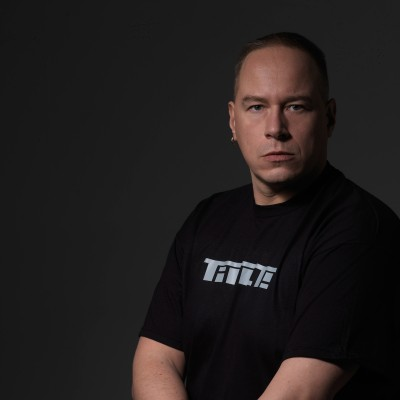
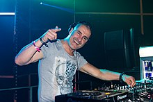
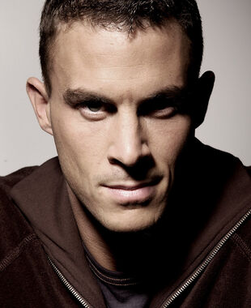
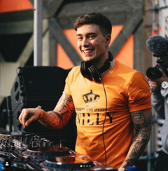
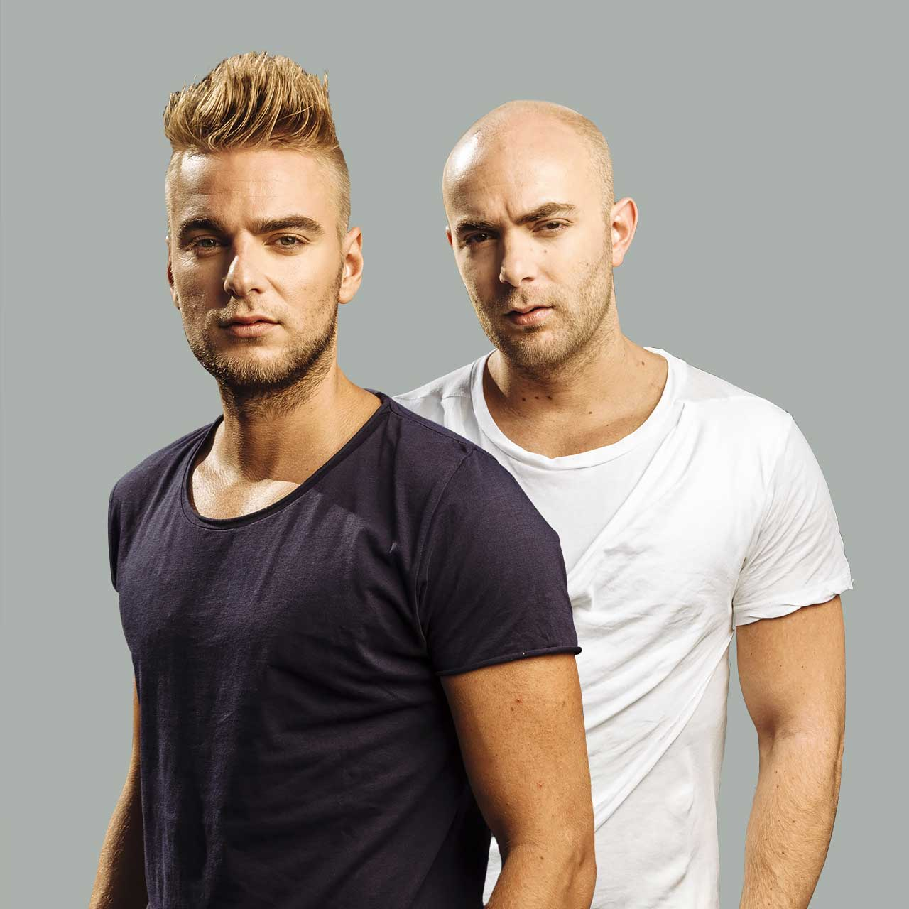

The Beholder: Tiene una historia

de éxitos virtualmente única. Ningún hombre
ha producido tantos clásicos como este hombre.
Con estos antecedentes, no es de extrañar que sus propios
sellos tengan estándares muy altos a la hora de poner
lanzamientos en vinilo.
Su ventaja de productor
queda muy clara durante sus sets.
Espere solo las pistas más nuevas,
que se lanzarán pronto, y altamente exclusivas
para ser probadas en usted. Él ya sabe que te gustan,
este hombre no se equivoca. Solo quiere ver qué tan alto
puedes saltar cuando los escuchas.
The Prophet:

Dov J. Elkabas , más conocido como The Prophet ,
comenzó su carrera como DJ en 1983 una vez que
descubrió los tocadiscos en una discoteca en Ámsterdam.
Comenzó a tocar la música hip hop antes de cambiarse
a house en 1988. 3 años después, estableció un equipo
de DJ llamado "The Dreamteam", en colaboración con DJ Dano,
Buzz Fuzz y Gizmo . El equipo fue un gran éxito dentro de
la escena gabber y hardstyle.
Sus producciones fueron editadas en vinilo y CD en sellos
como ID&T o Q-dance . También está detrás de muchas mezclas
de DJ que se publicaron en CD, como los CD Thunderdome, y
participó en proyectos como Hardheadz (junto con DJ Pavo) y
Punk Brozz (con DJ Zany).
En 2014 lanzó su primer álbum, Louder , que le llevó alrededor
de nueve meses producir este álbum.
Lady Lana:
 es una DJ y productora holandesa de hardstyle y anteriormente gabber .
Van Dreven nació en Amsterdam .Comenzó a tocar gabber en 1993 y
aunque nunca fue su intención convertirse en DJ, lo hizo, y ahora es
la DJ femenina más popular en la escena del hard dance holandés .
es una DJ y productora holandesa de hardstyle y anteriormente gabber .
Van Dreven nació en Amsterdam .Comenzó a tocar gabber en 1993 y
aunque nunca fue su intención convertirse en DJ, lo hizo, y ahora es
la DJ femenina más popular en la escena del hard dance holandés .
Logró el puesto más alto como DJ de hard dance en el top 100 británico
de Mixmag , al que ingresó por primera vez en el número cincuenta y cinco.
Sufrió una pausa a partir de 2010, después de una serie de afecciones
médicas: primero le diagnosticaron agotamiento después de una serie de
episodios de ansiedad. Después de un año de recuperación, le descubrieron
un melanoma y le extirparon los ganglios linfáticos .
Después de la operación, tuvo dolor en el hombro, como resultado de un nervio pinzado , y le
diagnosticaron daño nervioso , lo que le provocó un dolor pulsátil
constante en el brazo izquierdo. Después de dos años y medio, regresó al
último festival Thunderdome , donde realizó un set usando principalmente
un brazo.
Luna:

Richard de Mildt nació en La Haya en los Países Bajos y se mudó a
Sassenheim a la edad de tres años, donde vivió hasta los 21.
Actualmente vive en La Haya.
A finales de la década de 1990, de Mildt entró en contacto con
Q-Dance , lo que lo convirtió en uno de los DJ y productores
más famosos de la escena del hard dance alrededor del año 2000 y,
por lo tanto, también contribuyó al surgimiento del estilo hard.
A finales de 2002 fundó el sello StraightOn Recordings
junto a Pila y The Scientist, en el que de Mildt publicó
sus subastas en solitario hasta 2007, así como cuando DHHD
publicó sus colaboraciones con Trilok & Chiren
Headhunterz:

Desde niño demostró su interés por la música.
A los nueve años, Willem cantó en un coro con el que grabó
algunos CD. Tiempo después, decidió crear su propia música utilizando
FL Studio.
Junto con su amigo Bobby Van Putten, creó el proyecto
musical conocido como Nasty D-Tuners.
Tuvo su principal experiencia
como DJ en Defqon 1, donde fue descubierto por The Prophet.
Desde entonces, Headhunterz ha pinchado en los principales eventos
de hardstyle, incluyendo Defqon 1, Qlimax, Q-Base, In Qontrol
y Decibel. En el 2007 su tema, The Power of The Mind, fue el himno
escogido ese año por Qlimax.
También produjo el himno para Defqon 1
en el 2009 con el tema Scrap Attack, y de nuevo para Defqon 1 en
el 2010 (Australia), con Save Your Scrap for Victory. De igual
manera en 2012 junto con Wildstylez y Noisecontrollers produjo
World Of Madness Anthem 2012 para Defqon. En 2006 formó su
propia sub-compañía discográfica: Scantraxx Reloaded.
Showtek:

El dúo comenzó su carrera en 1999. Produjeron hardhouse en 2001 y en 2003
mutaron hacía el hardstyle. Lo afirmaron con el lanzamiento de su álbum
debut, Today Is Tomorrow en 2007 bajo su propio sello discográfico
Dutch Master Works.
Showtek fue uno de los primeros artistas de hardstyle en
lanzar un álbum de estudio, el cual fue precedido con el
lanzamiento de Analogue Players In A Digital World en 2009.
también produce temas del género Hard trance bajo el nombre de
"Walt", y Sjoerd produce pistas del género hardstyle, también como
solista, bajo el alias de "Dj Duro". Más tarde, los hermanos Showtek comenzaron
una serie de colaboraciones, un proyecto llamado Crazy Collabs, con otros
productores que abarca otros géneros de la música dance.2
En 2011, empezaron a trabajar en la coproducción con el aclamado productor
neerlandés Tiësto como en "Maximal Crazy" y en varias canciones incluidas en
el álbum Kiss From The Past de Allure, uno de los proyectos de Tiësto.
En ese mismo año, colaboran con el mismo Tiësto y Angger Dimas en el proyecto
denominado Boys Will Be Boys.
Wildstyle:
más conocido por su nombre artístico Wildstylez, es un DJ y productor
neerlandés. Tiene registros en la música hardstyle publicadas anteriormente
bajo el alias de "Seizure" junto a Ruben Hooyer.
Joram Metekohy tuvo su primer lanzamiento en solitario como
Wildstylez en 2007 por la discográfica Scantraxx. En 2010, Wildstylez en colaboración
con Noisecontrollers , fundó el sello discográfico "Digital Age".2Después de haber
abandonado Digital Age, y antes de su posterior colapso, Wildstylez editó sus
lanzamientos para Q-Dance Recordings y también dio a conocer muchas pistas de
forma gratuita a través de los medios de las redes sociales.
En 2013, Wildstylez
fundó su propio sello Hardstyle, Lose Control Music, bajo la tutela del sello Be Yourself Music.
A partir de 2014, él y Max Enforcer empezaron a lanzar su propia música a través de 'Lose Control Music'.